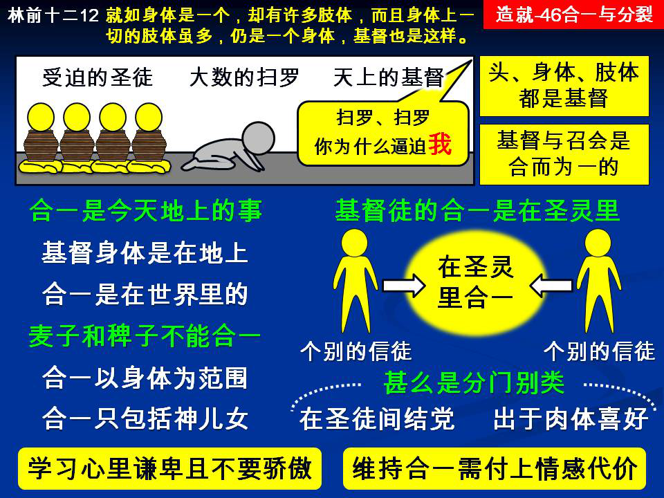

诗歌：补525首、615首
重要经文：
哥林多前书十二章12节：就如身体是一个，却有许多肢体，而且身体上一切的肢体虽多，仍是一个身体，基督也是这样。
哥林多前书十二章2 6节：若一个肢体受苦，所有的肢体就一同受苦；若一个肢体得荣耀，所有的肢体就一同欢乐。
约翰福音十七章21节：使他们都成而为一；正如你父在我里面，我在你里面，使他们也在我们里面；叫世人可以信你差了我来。
纲目要点：
壹 头、身体、肢体、都是基督。
贰 合一是今天在地上的事：
一 基督的身体是在地上的。
二 合一是今天在世界里的事。
参 麦子和稗子不能合一：
一 召会的合一只以身体为范围。
二 麦子和稗子不能合一。
肆 基督徒的合一是在圣灵里。
伍 什么是分门别类：
一 学习谦卑，心里不要骄傲。
二 基督徒作事应该彻底。
陆 维持合一需要出代价。
信息选读：
头、身体、肢体、都是基督
今天我们要提起一个问题，就是基督徒的合一。我们曾看过，基督的身体乃是彰显在地上的一件事。保罗告诉哥林多的人说，『就如身体是一个，却有许多肢体，而且身体上一切的肢体虽多，仍是一个身体，基督也是这样。』（林前十二12。）保罗不是说，基督和祂的召会也是这样。保罗也不是说，基督和祂的子民也是这样。保罗是说，基督也是这样。换句话说，头是基督，身体也是基督，肢体也是基督。所以他说，身体是一个，却有许多肢体；而且身体上一切的肢体虽多，仍是一个身体，基督也是这样。这一句话明显的给我们看见：元首、身体、肢体，都是基督。
合一是今天在地上的事
这一件事，有极重大的关系。基督的身体乃是一个。基督只有一个身体。所以，身体合一这件事，不是等到天上才彰显的事。身体合一这件事，乃是在地上就得彰显的。在地上，身体就是合而为一的。林前十二章给我们看见基督身体的事，里面就有一句话说，『若一个肢体受苦，所有的肢体就一同受苦；若一个肢体得荣耀，所有的肢体就一同欢乐。』（26。）这明显给我们看见，基督的身体是在地上的东西。因为如果是在天上的，说喜乐，还说得通；说受苦，就说不通。你不可能说，肢体在天上受苦。一个肢体受苦，全身就都受苦，这明显是在地上。只有在地上，才有一个肢体受苦的可能；也只有在地上，才有全身受苦，全身受逼迫的可能。所以，基督身体的合一，不是将来在天上的事，乃是今天在地上的事。
麦子和稗子不能合一
许多人喜欢引一段圣经，就是马太十三章。他们说，在马太十三章第二个比喻里，主告诉我们说，当祂离开世界的时候，好像是睡觉的时候，有仇敌来，将稗子撒在麦子里就走了。到长苗吐穗的时候，稗子也显出来。田主的仆人对主人说，你要我们把稗子薅出来么？主人说，容这两样一齐长，等着收割。那时收割的人要把稗子捆成捆，留着烧；把麦子收在仓里。（24～30。）许多人有一个误会，以为合一乃是麦子和稗子的合一；以为合一不只是麦子的合一，也是包括了稗子。要知道，主在这里不是讲合一，不是说信的和不信的应当混在一起；乃是说信的人不应该杀不信的人。罗马教就是预备把稗子拔掉，把他们所谓异端的人，都拔出来。我们知道，他们不只在原则上错了。连事情都错了。他们不只把稗子拔掉，也把麦子拔掉了。
基督徒的合一是在圣灵里
我愿意弟兄姊妹们特别注意：神不只是要叫祂的儿女合一，神并且是要叫祂的儿女在圣灵里合一。或者起一个名字，叫作基督徒的合一。神不是说任何的合一就行，任何的样子就行，神是说要在圣灵里合一。所以，我们今天在这里起一个名字，称呼他作基督徒的合一。这一种的合一，是在基督里的合一。要保守基督徒的合一，就要保守人在基督里、在身体里、在圣灵里的合一。这一个合一是有范围的，是像身体那样大。请你们记得，基督徒的合一，是以基督的身体为范围。
什么是分门别类
在哥林多的召会里有分争，他们有人说，我是属保罗的；我是属亚波罗的；我是属矶法的；我是属基督的。最反对说这话的人就是保罗。保罗说，保罗为你们钉了十字架么？你们是奉保罗的名受了浸么？保罗说，你们这样是结党，是肉体的行为。（林前一11～13，三3～4。）他们这样说，就是分门别类。弟兄姊妹们！这就是今天许多基督教团体的难处。许多所谓的神的子民，（我盼望不得罪他们，我们的灵要对。我们在神面前，要知道这是可伤心的事，不是可喜乐的事。不过，我们在神面前，路要清楚。）许多基督教的团体，自己从身体里分门别类出来了，当有许多弟兄姊妹要回到基督身体里去的时候，他们就说，他们（那些出来的人）是分门别类。殊不知所有在分门别类的团体里的人，自己若不从这一个分门别类的团体里出来，就都是分门别类的人。『分门别类』这一个字，或者说『派别』这一个字，在希腊文里是hairesis，这一个字在圣经里曾用过九次。六次在行传里，许多的时候是译作『教派』，像撒都该的『教派』，法利赛的『教派』，『拿撒勒的教派。』
分门别类是肉体的事
加拉太五章十九、二十节：『肉体（原文）的行为，都是明显的；就是…恼怒、私图好争、分立、宗派（hairesis）。』你看见肉体的事，其中有一样叫作宗派，（原文，）但是中文(和合版)圣经译作『异端』。这一个字，与分门别类，或者宗派，在希腊文里是同样的字。你在这里看见说，分门别类是什么？分门别类是肉体的事。保罗不只对加拉太人这样说，不只对哥林多人这样说，也是对你和我说，分门别类不是属灵的，乃是属肉体的。保罗在这里开一张清单，把所有肉体的行为都列出来。
学习谦卑，心里不要骄傲
千万不要骄傲说，我们有了一个家，就让有的弟兄流落在外面。如果我们还不觉得说，我们的家里丢了人，就这一个家有了毛病。如果说，还有一个弟兄，还有一个姊妹流荡在公会里，这是痛心的事，这是伤心的事，应该有两个态度：一面要保全，要维持那一个地位，另一面也不要骄傲。你总要站在那一个地位上，总要继续下去。可是当我们维持那地位的时候，心里不要骄傲说，我们是家了，就满意了。应当记念，在这个家里面，有许多人流荡在外面。我们要谦卑，要学习祈求。
维持合一需要代价
今天有的人眼睛被神开起来，看见身体，看见召会的范围，看见基督徒的合一，他们一点不被人的感情、人的忍耐圈住，他们自然而然往前去跟从主。当你不能往前去的时候，你要怪你的眼睛不够亮，心不够专一，不要怪那些出来的人。要知道说，有人肯脱离罪恶，有人肯脱离不义，有人肯脱离卑贱的事，有人舍得弟兄的情感，他们乐意站在身体的地位上，他们才能看见。今天不是他们用人的感情包围你，不是他们讲合一给你听，今天你也得付上代价。 （摘自初信造就第四十六篇）
课程复习：
一 合一为什么是今天在地上的事？
二 怎么说基督徒的合一是在圣灵里？
三 什么是分门别类？
四 为什么分门别类是肉体的事？
五 我有否看见维持合一需要付上代价？
辅助图表：
